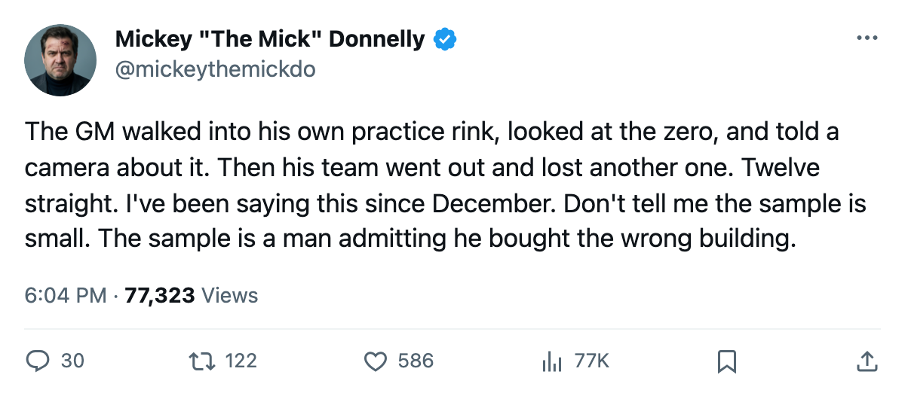
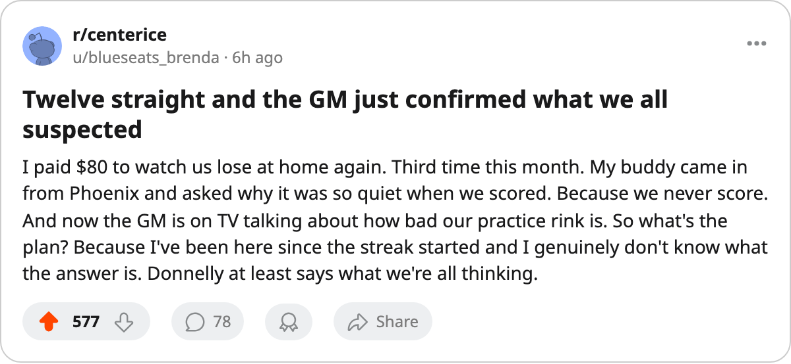

I TOLD YOU SO: THE GM SAYS IT HIMSELF AND THE STREAK IS TWELVE
San Jose's general manager told The Tunnel his practice rink is at zero. His team is 3-17 at home and hasn't won in 12.
 Mickey "The Mick" DonnellyColumnist, ex-goalie · The Penalty Box
Mickey "The Mick" DonnellyColumnist, ex-goalie · The Penalty Box
San Jose's coach: 12 straight, 3-17 at home, and the GM just pointed at him on national television

I said it on December 8. $66.24M, $2.07M a point, the most overpaid club in hockey. Reimer and his spreadsheet had a different take that day. The sample has matured. San Jose lost 12 in a row and now their own general manager is saying it into a camera.
Jules Tong told The Tunnel's Jan Kowalczyk on January 5: "Our practice rink is at zero. Our workout room is at one. I'm paying for a front end that the guys can't actually train in." On the losing streak, still eleven games at that point: "It sits where it sits. I look at it every day, I don't pretend it's not there. Eleven is eleven."
Twelve now.  San Jose Sharks are 11-20-8, 32 points, and 3-17 at home. No club in this league has lost more games in its own building.
San Jose Sharks are 11-20-8, 32 points, and 3-17 at home. No club in this league has lost more games in its own building.  Chicago Blackhawks are 5-15 in their barn.
Chicago Blackhawks are 5-15 in their barn.  Edmonton Oilers are 6-13. San Jose has won three games in 20 chances in front of 13151 people who paid $80 to watch a team that cannot win on familiar ice.
Edmonton Oilers are 6-13. San Jose has won three games in 20 chances in front of 13151 people who paid $80 to watch a team that cannot win on familiar ice.
Tong points at the coach and won't finish the sentence
Tong doesn't fire anyone on the record. He says: "He's got a roster. He's got the players I put in front of him. I'm not going to stand in your chair and talk about his lines." Then, about that same man: "I walk into a practice facility that is the worst in this league and I look at the man's face and I know what he's thinking." He stops. He doesn't need to finish. You don't walk into a building at zero and blame the players for the weather.
The room knows what it is. The Bureau's Morale Scale has San Jose at 88.4, third worst in this league.  Jyrki Lumme78 sits at 74 morale, a $2.30M defenseman playing 11.8 minutes a night in 32 games.
Jyrki Lumme78 sits at 74 morale, a $2.30M defenseman playing 11.8 minutes a night in 32 games.  Jason Wiemer73 leads the club with 100 penalty minutes in 40 games. That is the only category where this roster keeps pace with a contender's first line.
Jason Wiemer73 leads the club with 100 penalty minutes in 40 games. That is the only category where this roster keeps pace with a contender's first line.
Last in the Pacific by the widest margin in the division
San Jose is 2-5 in the division this season.  Mighty Ducks of Anaheim,
Mighty Ducks of Anaheim,  Phoenix Coyotes,
Phoenix Coyotes,  Los Angeles Kings,
Los Angeles Kings,  Dallas Stars: nobody has beaten them for money and nobody has beaten them on the scoresheet either. They visit
Dallas Stars: nobody has beaten them for money and nobody has beaten them on the scoresheet either. They visit  St. Louis Blues tomorrow, who are 21-9-5 and 12-7 at home. STL already won in San Jose 3-2.
St. Louis Blues tomorrow, who are 21-9-5 and 12-7 at home. STL already won in San Jose 3-2.
Reimer will say the sample is what it is. The sample is twelve straight. The sample is 3-17 at home. The sample is your own general manager admitting on public television that the practice facility is the worst in this league and the streak is the only number he'll give you. $66.24M a year for that.

